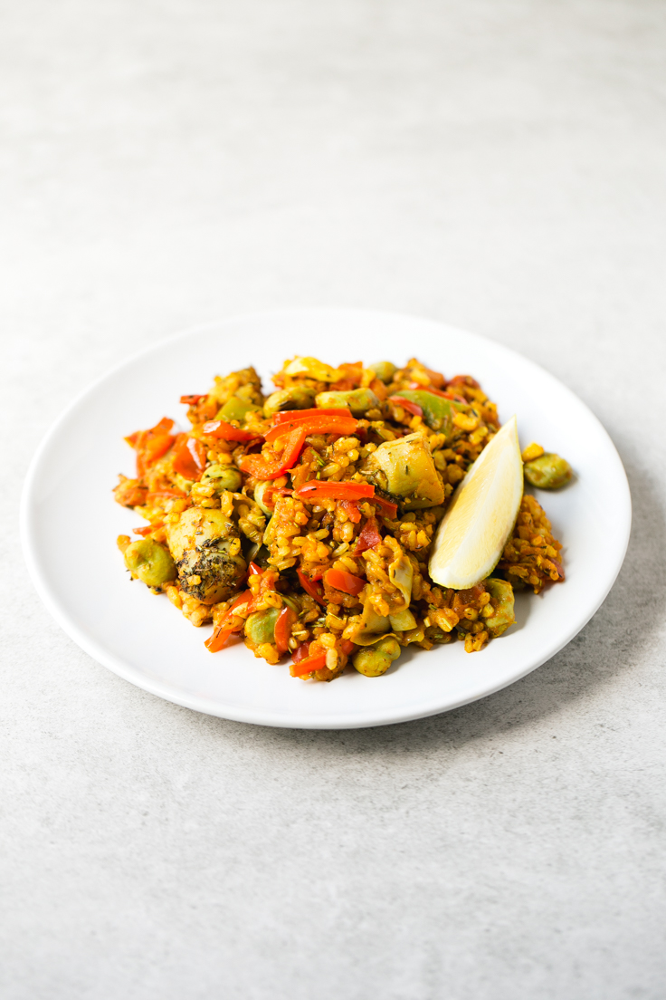

Receta: Arroz con verduras

Este arroz con verduras es un plato muy sabroso, ideal para los fines de semana o si nos apeteceun plato rico y
nutritivo.
Elementos
- Autor:
- Preparación:
- Comensales: 4
- Tiempo de preparación:
- Dificultad: Fácil
Ingredientes
- 1/2 tasa de arroz integral (100 g)
- Aceite de oliva virgen estra
- 4 dientes de ajo laminados
- 1/2 pimiento rojo
- 1/2 taza de judías verdes congeladas (70 g)
- 1/2 taza de habas congeladas (70 g)
- 1/2 taza de alcachofas congeladas (70 g)
- 1 tomate troceado
- 1 cucharadita de pimentón dulce
- 2 cucharaditas de romero seco
- 2 cucharaditas de tomillo seco
- 1 cucharadita de cúrcuma en polvo
- Pimienta negra molida al gusto
- Limón (opcional)
Preparación
- Cocina el arroz siguiendo las instrucciones del paquete (yo usé 1 taza de agua ó 250 ml y estuvo listo
en 25 minutos, aunque el agua y el tiempo de cocción varían en función de la marca).
- En una paellera, sartén profunda u olla echa el aceite y cuando esté caliente echa los dientes de ajo y
el pimiento. Cocina a fuego medio alto unos 5 minutos, removiendo de vez en cuando.
- Echa las judías, las habas y las alcachofas. Cocina durante unos 10 minutos más.
- Añade el tomate (yo no le quito la piel) y cocina durante 10 minutos.
- Por último, añade el arroz integral colado, el resto de los ingredientes (menos el limón), remueve y
cocina durante 5 minutos para que se mezclen los sabores.
- A mi me gusta servirlo con limón y echarme un chorrito de zumo cuando ya tengo el arroz en el plato.